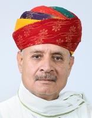
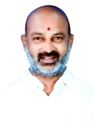

3rd Narendra Modi Ministry

Time Period:
9 June 2024 - 1 January 2025
Deputy Prime Ministers:
Composition:
Cabinet Minister: 30
Minister of State (Independent Charge): 5
Minister of State: 36
Key Cabinet Ministers
Rajnath Singh
Ministry of Defence
Amit Shah
Ministry of Home Affairs
Nitin Gadkari
Ministry of Road Transport and Highways
Jagat Prakash Nadda
Ministry of Health and Family Welfare
All Ministers
Narendra Modi
Department of Atomic Energy[Prime Minister]Department of Space[Prime Minister]
Ministry of Personnel Public Grievances and Pensions[Prime Minister]

Rajnath Singh
Ministry of Defence[Cabinet Minister]
Amit Shah
Ministry of Cooperation[Cabinet Minister]Ministry of Home Affairs[Cabinet Minister]

Nitin Gadkari
Ministry of Road Transport and Highways[Cabinet Minister].jpg)
Jagat Prakash Nadda
Ministry of Chemicals and Fertilisers[Cabinet Minister]Ministry of Health and Family Welfare[Cabinet Minister]

Shivraj Singh Chouhan
Ministry of Agriculture[Cabinet Minister]Ministry of Rural Development[Cabinet Minister]
_(cropped).jpg)
Nirmala Sitaraman
Ministry of Corporate Affairs[Cabinet Minister]Ministry of Finance[Cabinet Minister]

Subrahmanyam Jaishankar
Ministry of External Affairs[Cabinet Minister]
Manohar Lal Khattar
Ministry of Housing and Urban Poverty Alleviation[Cabinet Minister]Ministry of Power[Cabinet Minister]

H. D. Kumaraswamy
Ministry of Heavy Industry[Cabinet Minister]Ministry of Steel[Cabinet Minister]
.jpg)
Piyush Goyal
Ministry of Commerce and Industry[Cabinet Minister]
Dharmendra Pradhan
Ministry of Education[Cabinet Minister]
Jitan Ram Manjhi
Ministry of Micro Small and Medium Enterprises[Cabinet Minister]
Rajiv Ranjan Singh
Ministry of Fisheries, Animal Husbandary and Dairying[Cabinet Minister]Ministry of Panchayati Raj[Cabinet Minister]

Sarbananda Sonowal
Ministry of Shipping[Cabinet Minister]
Virendra Kumar Khatik
Ministry of Social Justice and Empowerment[Cabinet Minister]
Rammohan Naidu Kinjarapu
Ministry of Civil Aviation[Cabinet Minister]
Pralhad Joshi
Ministry of Consumer Affairs, Food and Public Distribution[Cabinet Minister]Ministry of New and Renewable Energy[Cabinet Minister]

Jual Oram
Ministry of Tribal Affairs[Cabinet Minister]
Giriraj Singh
Ministry of Textiles[Cabinet Minister]
Ashwini Vaishnaw
Ministry of Information Technology[Cabinet Minister]Ministry of Railways[Cabinet Minister]

Jyotiraditya Scindia
Ministry of Communications[Cabinet Minister]Ministry of Development of North Eastern Region[Cabinet Minister]

Bhupender Yadav
Ministry of Environment and Forests[Cabinet Minister]
Gajendrasingh Shekhawat
Ministry of Culture[Cabinet Minister]Ministry of Tourism[Cabinet Minister]

Annapurna Devi Yadav
Ministry of Women and Child Development[Cabinet Minister]
Kiren Rijiju
Ministry of Minority Affairs[Cabinet Minister]Ministry of Parliamentary Affairs[Cabinet Minister]
_(cropped).jpg)
Hardeep Singh Puri
Ministry of Petroleum and Natural Gas[Cabinet Minister]’,_in_New_Delhi.JPG)
Mansukh L. Mandaviya
Ministry of Labour[Cabinet Minister]Ministry of Youth Affairs and Sports[Cabinet Minister]

G. Kishan Reddy
Ministry of Coal[Cabinet Minister]Ministry of Mines[Cabinet Minister]

Chirag Paswan
Ministry of Food Processing Industries[Cabinet Minister]
Chandrakant Raghunath Patil
Ministry of Jal Shakti[Cabinet Minister]
Ministry of Planning[Minister of State (Independent Charge)]
Ministry of Statistics and Programme Implementation[Minister of State (Independent Charge)]
Rao Inderjit Singh
Ministry of Culture[Minister of State]Ministry of Planning[Minister of State (Independent Charge)]
Ministry of Statistics and Programme Implementation[Minister of State (Independent Charge)]

Jitendra Singh
Department of Atomic Energy[Minister of State]Department of Space[Minister of State]
Ministry of Earth Sciences[Minister of State (Independent Charge)]

Arjun Ram Meghwal
Ministry of Law and Justice[Minister of State (Independent Charge)]Ministry of Parliamentary Affairs[Minister of State]

Prataprao Ganpatrao Jadhav
Ministry of Ayurveda Yoga and Naturopathy Unani Siddha and Homoeopathy[Minister of State (Independent Charge)]
Jayant Chaudhary
Ministry of Education[Minister of State]Ministry of Skill Development and Entrepreneurship[Minister of State (Independent Charge)]

Jitin Prasada
Ministry of Commerce and Industry[Minister of State]Ministry of Information Technology[Minister of State]

Shripad Yasso Naik
Ministry of New and Renewable Energy[Minister of State]Ministry of Power[Minister of State]

Pankaj Choudhary
Ministry of Finance[Minister of State]
Krishan Pal
Ministry of Cooperation[Minister of State]
Athawale Ramdas Bandu
Ministry of Social Justice and Empowerment[Minister of State]
Ram Nath Thakur
Ministry of Agriculture[Minister of State]
Nityanand Rai
Ministry of Home Affairs[Minister of State]
Anupriya Patel
Ministry of Chemicals and Fertilisers[Minister of State]Ministry of Health and Family Welfare[Minister of State]

V. Somanna
Ministry of Jal Shakti[Minister of State]Ministry of Railways[Minister of State]

Pemmasani Chandra Sekhar
Ministry of Communications[Minister of State]Ministry of Rural Development[Minister of State]

S. P. Singh Baghel
Ministry of Fisheries, Animal Husbandary and Dairying[Minister of State]Ministry of Panchayati Raj[Minister of State]

Shobha Karandlaje
Ministry of Labour[Minister of State]Ministry of Micro Small and Medium Enterprises[Minister of State]

Kirti Vardhan Singh
Ministry of Environment and Forests[Minister of State]Ministry of External Affairs[Minister of State]

B. L. Verma (Uttar Pradesh politician)
Ministry of Consumer Affairs, Food and Public Distribution[Minister of State]
Shantanu Thakur
Ministry of Shipping[Minister of State]
Suresh Gopi
Ministry of Petroleum and Natural Gas[Minister of State]Ministry of Tourism[Minister of State]

L. Murugan
Ministry of Information and Broadcasting[Minister of State]Ministry of Parliamentary Affairs[Minister of State]

Ajay Tamta
Ministry of Road Transport and Highways[Minister of State]
Bandi Sanjay Kumar
Ministry of Home Affairs[Minister of State]
Kamlesh Paswan
Ministry of Rural Development[Minister of State]
Bhagirath Choudhary
Ministry of Agriculture[Minister of State]
Satish Chandra Dubey
Ministry of Coal[Minister of State]Ministry of Mines[Minister of State]

Sanjay Singh
Ministry of Defence[Minister of State]
Ravneet Singh
Ministry of Food Processing Industries[Minister of State]Ministry of Railways[Minister of State]

Durga Das Uikey
Ministry of Tribal Affairs[Minister of State]Raksha Khadase
Ministry of Youth Affairs and Sports[Minister of State]
Sukanta Majumdar
Ministry of Development of North Eastern Region[Minister of State]Ministry of Education[Minister of State]

Savitri Thakur
Ministry of Women and Child Development[Minister of State]
Tokhan Sahu
Ministry of Housing and Urban Poverty Alleviation[Minister of State]
Raj Bhushan Choudhary
Ministry of Jal Shakti[Minister of State]
Bhupathi Raju Srinivasa Varma
Ministry of Heavy Industry[Minister of State]Ministry of Steel[Minister of State]

Harsh Malhotra
Ministry of Corporate Affairs[Minister of State]
Nimuben Jayantibhai Bambhaniya
Ministry of Consumer Affairs, Food and Public Distribution[Minister of State]
Murlidhar Mohol
Ministry of Civil Aviation[Minister of State]Ministry of Cooperation[Minister of State]

George Kurian
Ministry of Fisheries, Animal Husbandary and Dairying[Minister of State]Ministry of Minority Affairs[Minister of State]

Pabitra Margherita
Ministry of External Affairs[Minister of State]Ministry of Textiles[Minister of State]